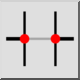
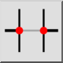
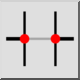
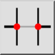

Rompi segmento
Barra degli strumenti / Icona:
 

Menù: Modifica > Rompi segmento
Scorciatoia: D, 2
Comandi: break | breakout | d2
Questa è una traduzione automatica.
Barra degli strumenti / Icona:
 

Menù: Modifica > Rompi segmento
Scorciatoia: D, 2
Comandi: break | breakout | d2
Divide le entità eliminando un segmento limitato dall'intersezione di entità.
Scegliere l'entità che si desidera dividere facendo clic sul segmento che si desidera tagliare. Il segmento viene rimosso automaticamente se la casella di controllo "Rimuovi segmento" è selezionata. In caso contrario, l'entità viene tagliata solo alle intersezioni senza rimuovere il segmento.